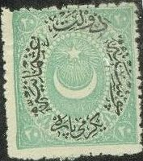
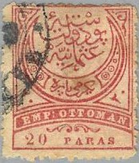
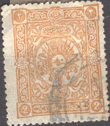
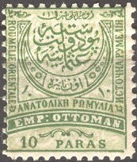
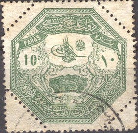
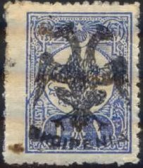

(Arabic numerals)
Türkiye - Türkei - Turquie
Return To Catalogue - 1863 issue - 1865-1875 - 1876-1900 - 1901-1907 - 1908-1912 - 1913 - 1913-1920 - Miscellaneous - Fiscal stamps - Austrian post offices in Turkey - Turkey cancels on the first issues
Note: on my website many of the
pictures can not be seen! They are of course present in the
catalogue;
contact me if you want to purchase it.
(Arabic numerals)
Many foreign post offices existed in Turkey (Austrian, British, French, German etc.).
I still need many images of the many issues/overprints of this country, I would be very grateful for any help! If you possess images of stamps that are not yet present in this catalogue, please contact me!
For stamps in this 1863 design click here.


The above design was issued from 1865 to 1875, click here for more details.


Two designs issued between 1876 and 1900, click here for more of these stamps.


Examples of stamps issued from 1901 to 1907.
Examples of stamps issued from 1908 to 1912.

Stamp issued in 1913.
Some typical examples of stamps issued from 1913 to 1920.
During world war I, several overprints were applied to the stamps of previous issues that were still in stock (due to a stamp shortage), some examples:

(6-pointed star and crescent, date in arabic in crescent)

(5-pointed star and crescent, date in arabic in crescent)
(6 and 5 pointed star with crescent, text in crescent, date in
arabic between crescent and star, initially intended to be
charity stamps)


(Beetle like overprint of 1917)
The following stamp (and other values) was issued for Thessaly:

Some stamps of Turkey were surcharged with a double headed eagle and used in Albania, example:

(Albania stamp, overprinted with double headed eagle and
'SHQIPENIA')
Stamps - Timbres-Poste - Briefmarken - Postzegels
{kind=link}
{kind=link}
{kind=link}